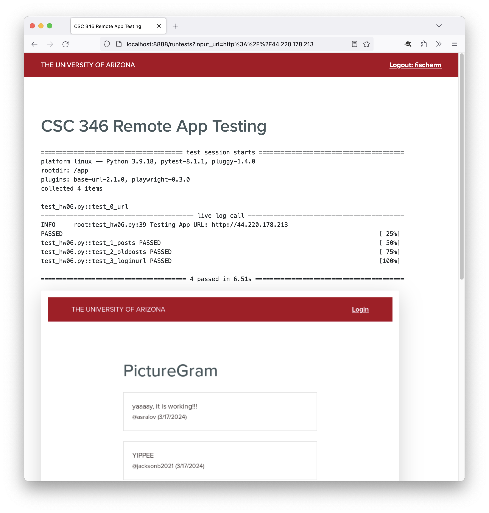

CSC 346 - Homework 6 #
In this homework assignment we'll continue work on our PictureGram client using our same EC2 instance from HW05.
What to turn in #
There are two parts to be graded for this assignment. The first part is a .zip file containing your app files. This is similar to past assignments.
yournetid-hw06/
Dockerfile
html/
favicon.ico
index.html
js/
app.js
picturegramSDK.js
The second part is testing your EC2 server deployment. See Part 5: Testing for instructions on how to do this. Your .zip file and the on-demand remote testing must be completed by the due date of the assignment.
Points #
This assignment will be worth 50 points. Turning the assignment in early will earn you an additional 5 points extra credit.
- Early submission: March 21st 11pm MST (UTC-7)
- Final Due Date: March 23rd 11pm MST (UTC-7)
Starting Point #
For this assignment, begin by downloading the following Zip file. This contains the basic diretory structure, and some starting HTML documents. Place these files into your yournetid-hw06 directory, and add to the files as needed.
https://www2.cs.arizona.edu/classes/cs346/spring24/homework/NETID-hw06.zip
Since this class is more about the Cloud Computing bits of things, and less about web app development, the JavaScript for this assignment is limited to filling in some additional functionality which is similar to some existing code that is in the starter file.
index.html #
We don't need multiple pages anymore, so app.html has been removed, and all the logic and user interface just happens directly in index.html. You won't have to make any changes in this file, but it's a good idea to look at it and see how the markup looks, and how the JavaScript files are included.
app.js #
The main application logic still happens in app.js. There's a lot more code in the starter version, but still has some places for you to fill in functionality.
picturegramSDK.js #
I moved the API access function in to a separate file, and made it in to a class which is instantiated inside app.js. This will be similar to using Software Development Kits (SDKs) provided by 3rd party services you're likely to use. There's one main apiCall() method which is fully implimented. There are convenience methods for the rest of the functionality. Some of these are implimented in the starter kit, and others you'll impliment as part of the homework assignment.
Part 1: Load Older Posts #
The starter app will load the 5 most recent posts, basically starting where HW05 left off. For this part you will impliment a button which loads older posts when clicked.
picturegramSDK.js #
First you will impliment the getPostsBefore() method of the picturegramSDK. This will allow you to load older posts. Remove the console.log line, and replace it with code that will call this.#apiCall( ... ) correctly, and return that result. See getPosts() in the same file for an example.
This needs to call the posts/before/${timestamp} action of the picturegramSDK. It uses the GET http method, so be sure to specify that. The timestamp will passed in to the method in the endTime variable, so you should be able to append that value to construct your method string.
After this method is implimented, the "Load Older Posts" button the the app page should work. See if you can trace the connections from user click, to button event listener, to the getPostsBefore() method and to the final HTTP API call that's made.
Part 2: Authentication #
picturegramSDK.js #
Next you need to impliment the authenticate() method on the picturegramSDK class. Remove the console.log line of code containing the early return, then follow the comments to implement the rest of the functionality. Replace the undefined == undefined if check with a correct conditional.
This should be similar to the getPostsBefore method. You need to take the arguments passed in to the function, and build an action string which you will pass to the this.#apiCall( ... ). This API call is also a GET.
It will be very helpful to familiarize yourself with what a response JSON object looks like from the authenticate API call from the PictureGram API documentation.
Async/Await #
Note that the authenticate method is marked as async. This is because we need to await the response from our apiCall so that we can process the results. If you look at the picturegramSDK, only the functions that need to deal with the response of an apiCall directly in them are async/await. The others return the Promise object from apiCall to the caller context. In all cases however, calls to the picturegramSDK that require apiCall access must be made in an async/await aware context. See the async function loadPosts implementation in app.js as an example.
Store Auth Response #
When we get the authResponse from the authenticate/${ticket}?service=${service} api call, we need to store the resulting username and jwt values as local class attributes, and also store in the browser's window.sessionStorage. This way if you reload your page, you will remain logged in and not have to authenticate each time.
Storing the values on class attributes is as simple as assigning them to this.attributeName. Look at the top of class picturegramSDK to see the attributes that are defined as part of the class.
Storing the information in window.sessionStorage can be done by calling the appropriate window.sessionStorage.setItem() method. See the Mozilla Developer documentation for details.
Part 3: Check Logged In Status #
After a successful login, the user interface is updated to show the username, and provide a logout link instead of a login link. In order to be able to reload the page, or leave and come back in the same browser session, we stored the username and jwt auth token in the browser's sessionStorage. Now we need to try and read these values back out again, and update the interface if we have stored values.
isLoggedIn() #
Implement the isLoggedIn() method in picturegramSDK.js. You can determine if someone is logged in or not by testing to see if the current picturegramSDK object has the authJWT attribute set, or if it is null. Replace the undefined == undefined if check with a correct conditional. If this.authJWT is null, we can try and load the username and jwt token from sessionStorage using window.sessionStorage.getItem(). If we retrieve values from sessionStorage, then we can assign those back to the local object attributes, and finally test this.authJWT again to see if we have login information now. If we do we can return true, and return false if not.
setup() #
Finally, now that we have a method to determine if the user is logged in or not, we need to use that in the setup() function in app.js. Replace the undefined == undefined if check with a correct conditional.
Since we assign the username and jwt values to local object attributes, we can reference them from our pg object using pg.username. If there is a logged in user, call the updateLoginButton() function and pass in pg.username. If not, call updateLoginButton() with no argument.
Take a look at the updateLoginButton function to see what the behavior is in each case.
Part 4: New Posts #
Once you can successfully log in, the interface should update to show the new post form. There is already code connecting the "POST!" button to the handleNewPost() function in app.js. This function gets the contents of the textarea and then calls pg.createPost(), which you will implement next.
createPost() #
In picturegramSDK.js find the createPost() method. Implementing this will actually only involve one line of code, but there's a lot that goes into that line. Unlike the previous API calls that you have implemented, this one will use the POST HTTP method since it is sending data to the API. The API action we want to call is posts, so take a look at the PictureGram API Documentation for that method.
Also unlike the previous API calls, this one requires authorization, since we don't want to just allow anonymous message and image posting. So you must include the optional requiresAuth argument of the #apiCall() method. Lastly this API call needs to include the data itself to send to the server as the fourth data argument. The contents of this last argument must be a JavaScript object, with one key: message and the value from postText that is being passed in.
Note that for this homework we only need to include themessagekey and value, since we don't yet support image uploads. So you can ignore theimage_full_urlandimage_thumbnail_urlkeys from the documentation.
The result from the #apiCall() will be returned from this method.
Once your API call works, the new post should show up in your client.
Your posts are visible to your classmantes and the public. Be mindful of the Student Code of Conduct specifically section F and the prohibition on harassment, intimidation, and threats. The posts are logged to your NetID. Be respectful!
Part 5: EC2 #
As with homework 05, once you have the app implimented and working correctly on your local Docker environment, you need to move it to an EC2 instance so that you can access your app live on the internet. See Part 4 from Homework 5 for details on running your app on your EC2 instance.
You will need to set up an EC2 instance, and complete the following tasks:
- Install docker
- Start the docker service
- Copy your homework 6 files to the EC2 host (Dockerfile, html, js etc)
- Build your docker image on the EC2 host
- Run your docker image on the EC2 host
When you run your docker image on the EC2 host, you want the publicly available port to be maped to 80, instead of 8080 as we've been doing locally. This matches with the security group configurations around your EC2 instance.
The docker service runs as
rooton your EC2 instance, so you will need to use thesudocommand before yourdockercommands to elevate your current user privileges.sudo docker build -t homework06:latest . sudo docker run -i --rm -p80:80 homework06:latest
Part 6: Testing #
I have updated the testing app you can use to test out your homework assignment once you get it running. All the tests you run through the app are logged, and we will look at the most recent test results for your NetID when we do the grading. So make sure your last test is the good one. 😀
https://csc346.test.apps.uits.arizona.edu/
You will need to log in through WebAuth to see the URL form.

The tests take between one to two minutes to run, so be patient.
You can only test a publicly accessible URL. This cannot be used to test your http://localhost:8080/ version. Think about why this would be.
I am not doing a full test of all the functionality required for this homework. I am only performing 4 tests remotely:
- Can your application be accessed, and does the resulting URL match the one entered.
- Are there 5 initial chats when the page loads.
- Does the
#olderchatsbuttonbutton exist, and load more chats when clicked. - Is there a
Loginlink with anhrefattribute pointing to the correct URL.
Creating new posts still needs to work! We will test that separately when we grade the assignment.
Troubleshooting Tips #
- Can you visit your app's URL directly in a browser window? If you cannot load your app, the testing app won't be able to either.
- Check the URL. Did you enter a complete URL such as
http://53.2.35.19? - Does your URL use
http://? We have not configured TLS support, and port 443 is not open on your security group. Make sure to usehttp. - Did you map your docker port 80 to your host's port 80?
-p80:80. Only port 80 is open on our security group to allow incomming connections.